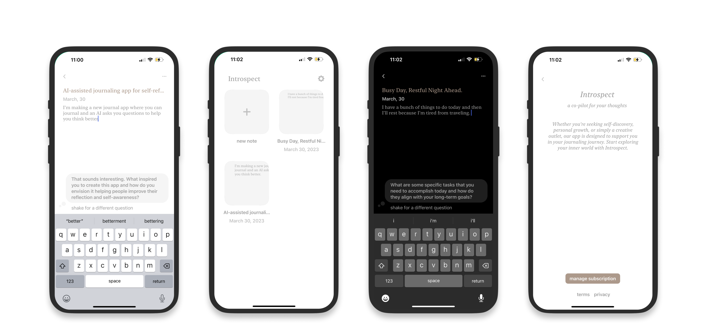

written by Vidy Thatte
Introducing Introspect, a journaling app that utilizes ChatGPT's capabilities to ask deep and meaningful questions about your writing. Think of it as a co-pilot for your thoughts, helping you reflect on and gain clarity about any situation you may be going through.
This is our first foray into building a complete and user-friendly product using ChatGPT's API and we have been amazed by its simplicity and versatility. The app is designed for solo use, without any social features, there's a dark/light mode depending on your phone's OS settings, you can shake your phone to get a new question, the journal titles are auto-generated and we have implemented a paywall mainly to cover any API costs that may arise if the app gains popularity beyond our expectations.
The app's questions have been excellent so far, and I've been using it as my primary journaling tool on my phone, instead of the Notes app. If demand grows, we plan to launch a desktop version with cloud support and additional features that could make Introspect an indispensable journaling companion.